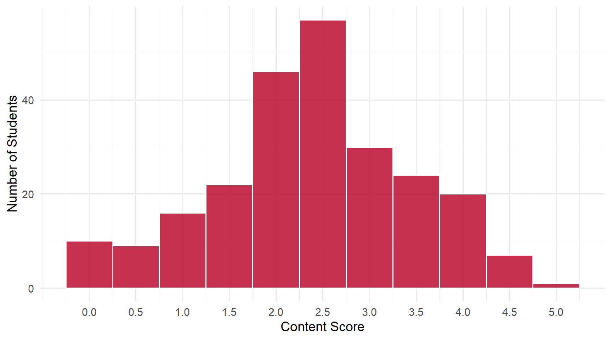
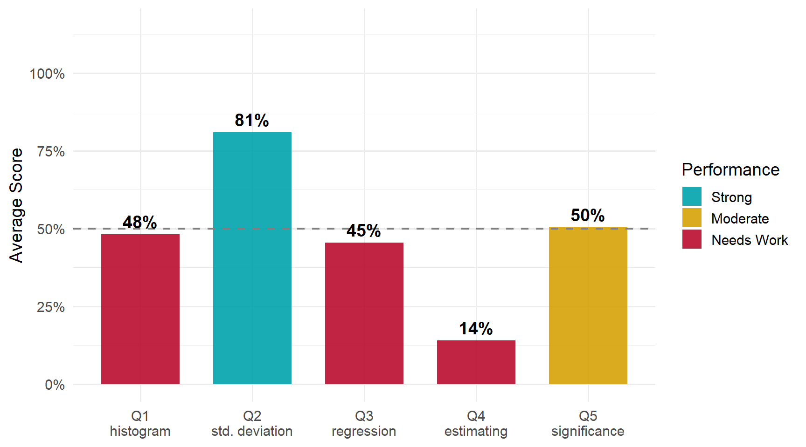

10 Daily 01 — Aug 18
10.1 Class Performance
Students: 242 | Content mean: 2.39 / 5 | Median: 2.5 | SD: 1.07 | Mean daily score: 8.96 / 10
Content scores ranged from 0 to 5 out of 5. (Your daily score adds the 8-point attendance credit for submitting; each question is worth 0.4 of the remaining 2 points.)
This was the first daily of the term, covering five ideas from the opening class. The spread below is a picture of what carried over from that first session — not a verdict on anyone. Where the class came up short, it is almost always because a term was seen once and not yet used.
10.2 Score Distribution
10.3 Performance by Question

10.4 Questions
10.4.1 Q1: What does a histogram tell you?
TipCorrect Answer
A histogram shows the frequency distribution of continuous data — how many observations fall within each range or bin. The key word is how many: a histogram is a picture of counts.
WarningCommon Errors
- Describing the shape without the counts — “shows how the data is spread out,” “how skewed it is,” “the structure of the data.” These name a property of a distribution but never say anything is being counted. This was the single largest partial-credit group.
- “Categories” instead of bins — close, and it earns partial credit when a count idea is present. With no count idea at all it becomes a bar chart, which is a different thing: bar charts compare categories, histograms count observations within numeric ranges.
- Time-series reading — “shows change over time,” “the history of a data set.” A histogram has no time axis.
- Box-plot swap — listing min, max, median, quartiles, and outliers. That is the five-number summary, not a histogram.
- Vacuous description — “charted data in graph form,” “shows you points on a dataset.” True of nearly every chart, so it says nothing specific.
Full-credit answers almost always contained one of three phrases: frequency, how often, or how many fall within a range.
10.4.2 Q2: What does standard deviation measure?
TipCorrect Answer
Standard deviation measures how spread out the data is from the mean — roughly, the average distance of the observations from the center.
WarningCommon Errors
- “Variation” with no center named — “how much variation there is in the data.” The dispersion idea is right, but standard deviation is dispersion around a specific point, and that point is the mean. This was the main partial-credit form and is a vocabulary gap more than a conceptual one.
- The wrong center — measuring distance from the median, or from zero. The mechanism is understood; the reference point is not.
- Collapsing into the mean itself — “another way of measuring the average.” The mean is the center; the standard deviation describes how far the data sits from it.
- Range or IQR substitution — “the middle 50%,” or the distance between the smallest and largest values. Both are spread measures, but neither is the standard deviation.
This was the strongest question of the daily, and the full-credit phrasing was remarkably consistent across the class: average distance from the mean.
10.4.3 Q3: What is a regression?
TipCorrect Answer
A regression is a statistical model describing how the average value of an outcome changes with one or more explanatory variables — how \(x\) relates to, predicts, or affects \(y\). The relationship between variables is the whole point.
WarningCommon Errors
- The machinery without the relationship — “a line of best fit,” “an equation that fits the data,” “a model of the trend.” This was the biggest partial-credit group by far. You remembered what a regression looks like but not what it is for. A line through data is only a regression when it describes how one variable moves with another.
- A plot instead of a model — “a graph,” “a scatter of points.” The scatter plot displays the data; the regression is the model fitted to it.
- Prediction with nothing linked — “a model to predict outcomes.” Closer, but predicting what from what?
- The correlation substitution — “measures the correlation between two variables.” Seductive, because it does name two variables — but correlation summarizes association in a single number, while a regression models how the average of \(y\) changes as \(x\) changes.
- The dictionary sense — “a decline,” “going backward.” A real meaning of the word, just not this one.
- Repeating Q2’s answer — describing variation or distance from the mean.
The fix is small: name the two things and say how they are connected.
10.4.4 Q4: How do you estimate a regression?
TipCorrect Answer
By Ordinary Least Squares (OLS) — choosing the coefficient values that minimize the sum of squared residuals, where a residual is the vertical distance between an observed point and the fitted line.
WarningCommon Errors
- Naming a tool instead of a method — “in Excel,” “with R,” “using a regression table,” “through a formula.” The software is how you run the calculation; the question is what the calculation does.
- “Regression analysis” — circular: the method cannot be its own name.
- Writing the equation form — \(y = mx + b\), or “find the slope and the intercept.” That is the output of the estimation, not the rule that picks it. Infinitely many lines have a slope and an intercept; OLS is the rule that chooses which one.
- Answering Q5 instead — t-tests, F-tests, p-values. Those assess a coefficient after you have estimated it.
- R² or standard deviation offered as the estimation method.
- “Line of best fit” alone — this earned partial credit, because the idea of fitting is present. What is missing is the criterion: best in what sense? The answer is least squared error.
ImportantWorth Your Attention
This was, by a wide margin, the hardest question on the daily — 5% of the class earned full credit, and the words OLS, least squares, and squared residuals were nearly absent from 242 papers.
That is a coverage gap, not a grading one, and it is worth fixing early because everything downstream depends on it. If you take one thing from this daily, make it this sentence: OLS picks the line that makes the sum of the squared vertical distances to the points as small as possible.
10.4.5 Q5: How do you test whether a regression coefficient estimate is statistically significant?
TipCorrect Answer
Compare the \(t\) statistic for the null that the coefficient equals zero to the appropriate critical value, or compare that statistic’s \(p\)-value to alpha (typically 0.05). If \(t\) exceeds the critical value — equivalently, if \(p <\) alpha — the estimate is statistically significant.
WarningCommon Errors
- Naming the quantity without the comparison — “look at the p-value,” “run a t-test.” This was the bulk of the partial-credit band. A p-value on its own decides nothing; significance comes from comparing it to a threshold.
- A threshold with no quantity — “it has to be below a certain number,” with no statistic named. The mirror of the error above: a rule with nothing to apply it to.
- The comparison backwards — “significant if the p-value is greater than 0.05.” A small p-value means the result would be unlikely if the true coefficient were zero, which is why small means significant.
- Confidence level in alpha’s place — comparing to 95% rather than 0.05. The two are related (95% confidence ↔︎ alpha of 0.05) but they are not interchangeable in the comparison.
- Coefficient magnitude rules — “significant if it is bigger than 1.” Size and significance are different questions: a tiny coefficient can be highly significant, and a large one can fail the test.
- R² close to 1 — that describes overall fit, not whether one coefficient differs from zero.
Worth noting: essentially every full-credit answer used the \(p\)-value route, and almost none used the \(t\)-versus-critical-value route — even though both are correct and the second is where the logic starts.
10.5 What the Class Did Well
Standard deviation is genuinely solid. Seventy-one percent earned full credit, with most of the rest missing only the reference to the mean. That is a real result on day one.
Where partial credit was earned, it was usually one word away from full. Across Q1 and Q2 especially, the gap between half and full was a missing term — frequency, the mean — rather than a missing idea.
10.6 What to Review
- OLS, and what “least squares” means. The single highest-value thing to fix from this daily. Not the formula — the idea: minimize the sum of squared vertical distances.
- What makes a regression a regression. Not the line, not the plot, not the equation: the relationship between variables the line is describing.
- The significance comparison, in full. A statistic and a threshold and which direction means significant.
- Keep the five ideas distinct. A recurring pattern was answers migrating between boxes — Q2’s content appearing under Q3, Q5’s under Q4. If two answers on your sheet say nearly the same thing, at least one is in the wrong place.
NoteHow this was graded
Every paper was scored twice, independently, against the same published rubric, by graders who could not see each other’s scores or your name. The two passes agreed on 95% of all scores; every disagreement was reviewed a third time against the rubric and settled with a written reason. Submitting the daily earns 8 of 10 regardless of content.